Ольга Гусарова
PR & Media Strategist
Работа с экспертами, брендами и публичным образом через медиа, стратегию и влияние.


Работа с экспертами, брендами и публичным образом через медиа, стратегию и влияние.
Системная работа с экспертным позиционированием врача через федеральные медиа, телевидение и экспертные комментарии.
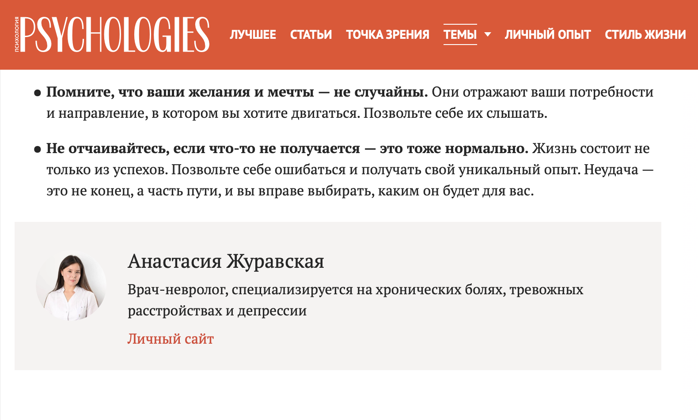
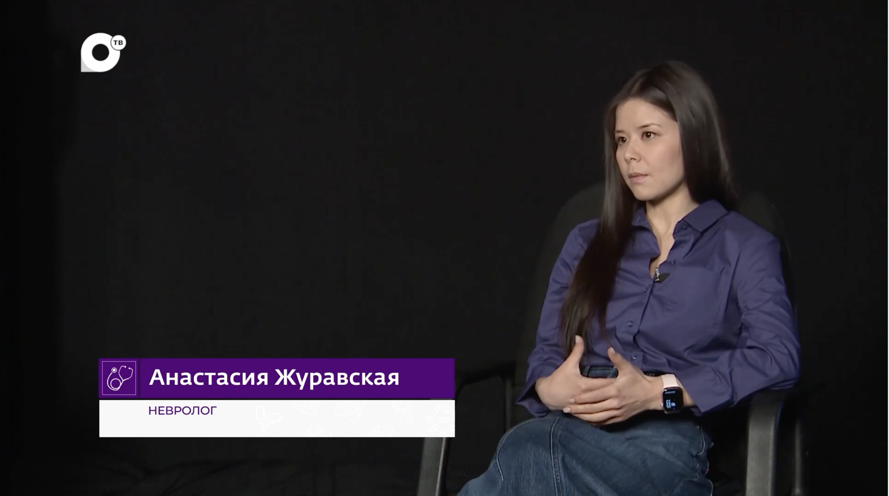
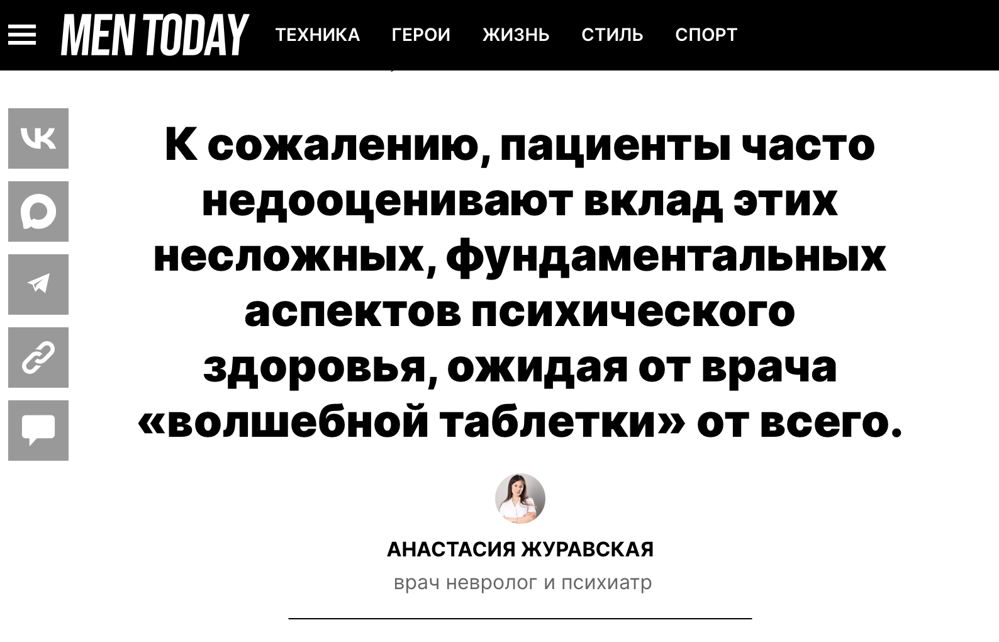
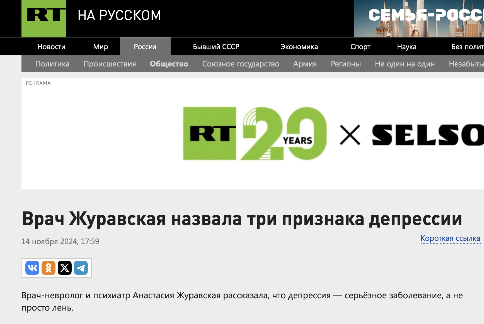
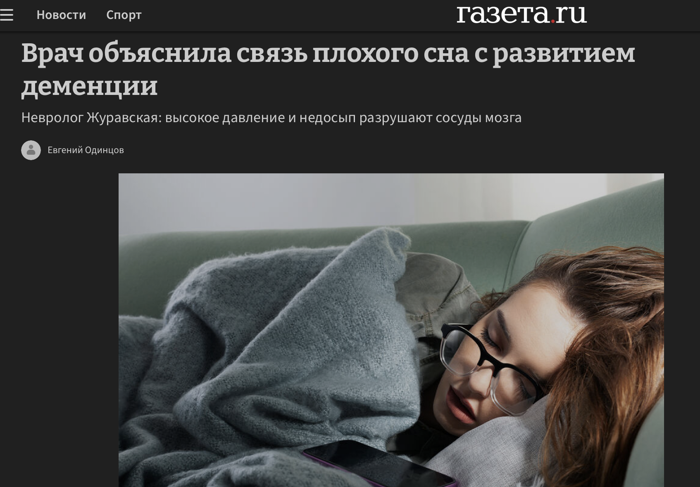
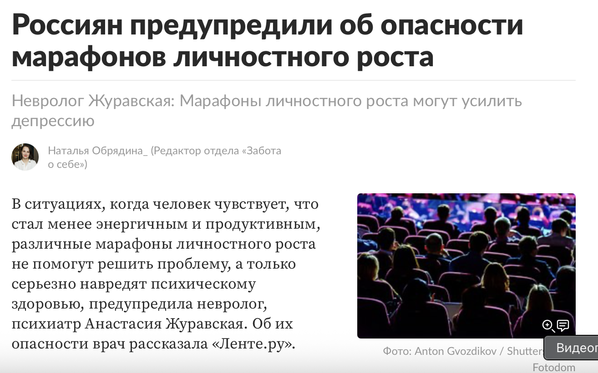
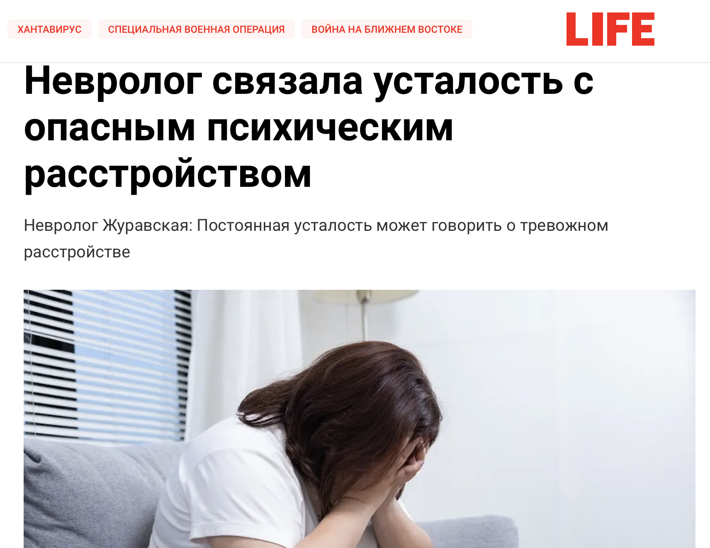
Позиционирование профессионального серфера через lifestyle-медиа, спортивные медиа и международные упоминания.
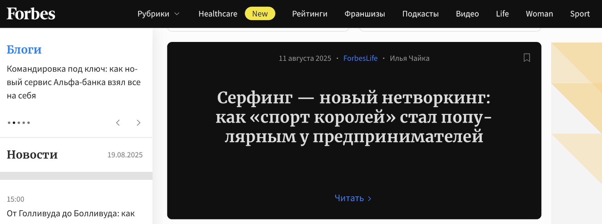
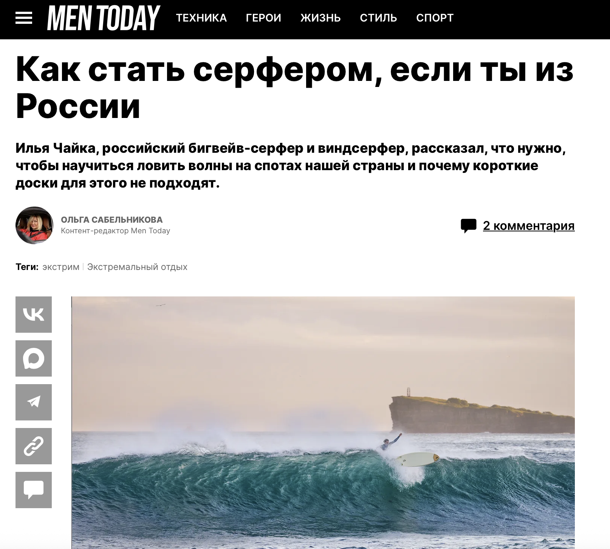
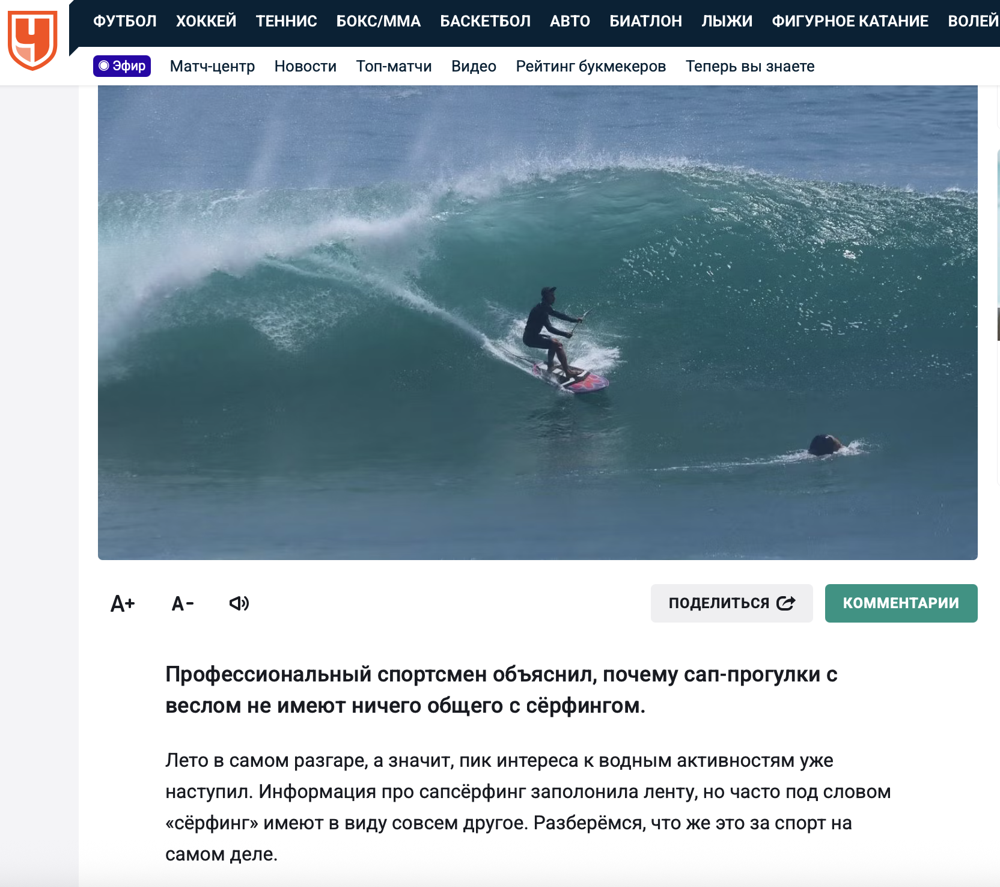
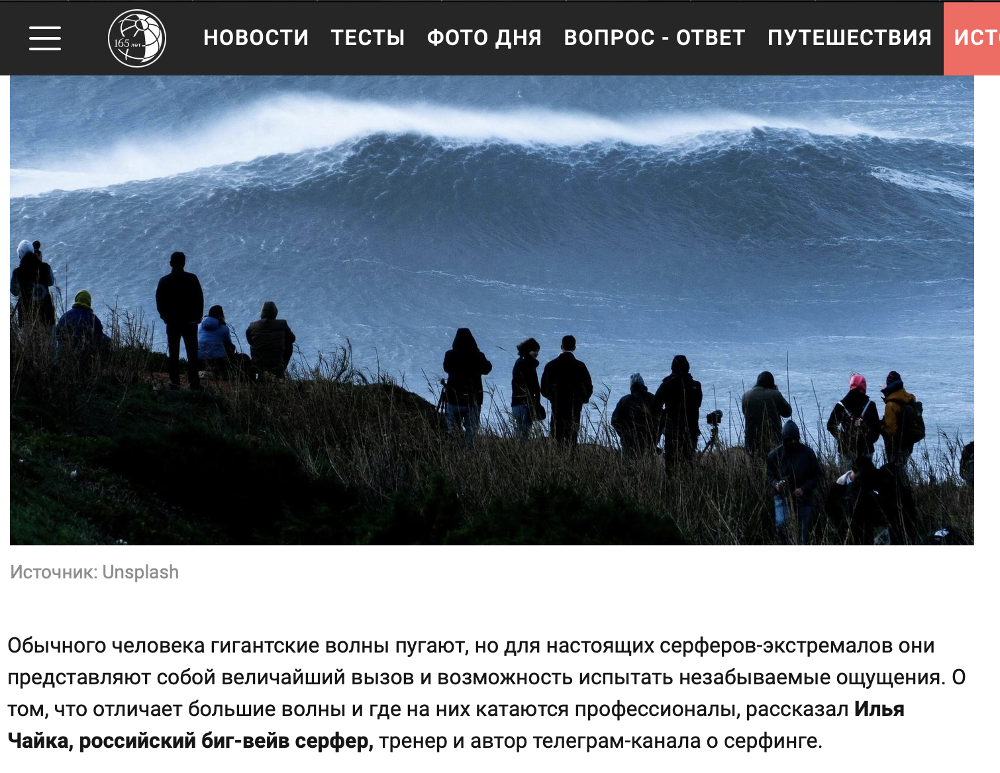
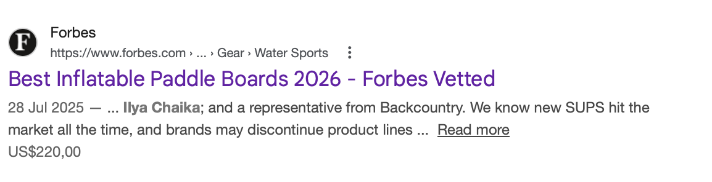
Экспертное присутствие в lifestyle-медиа и федеральных изданиях.
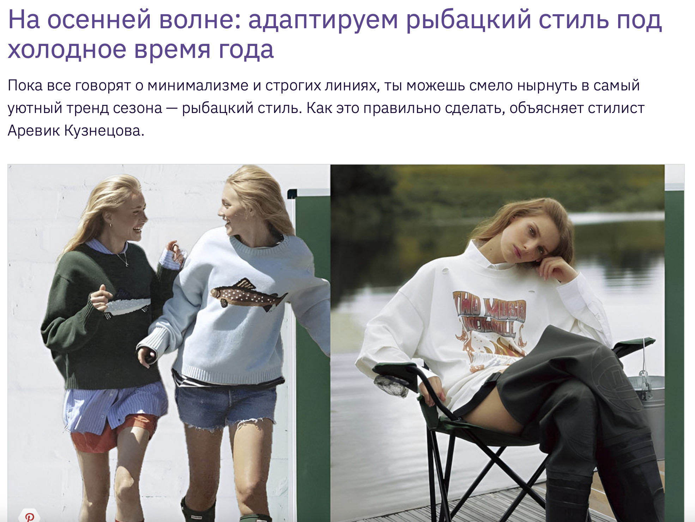
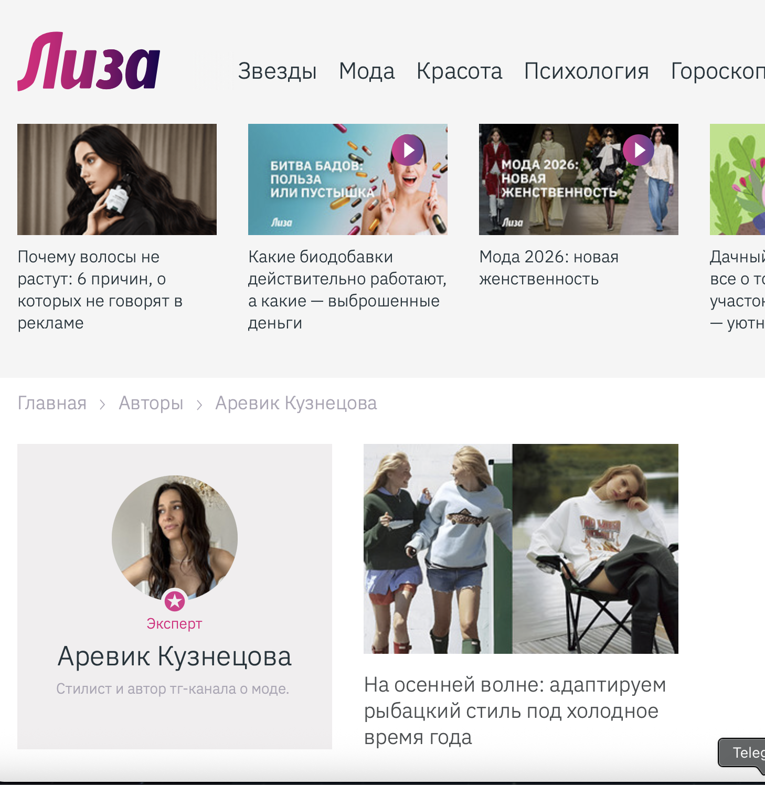
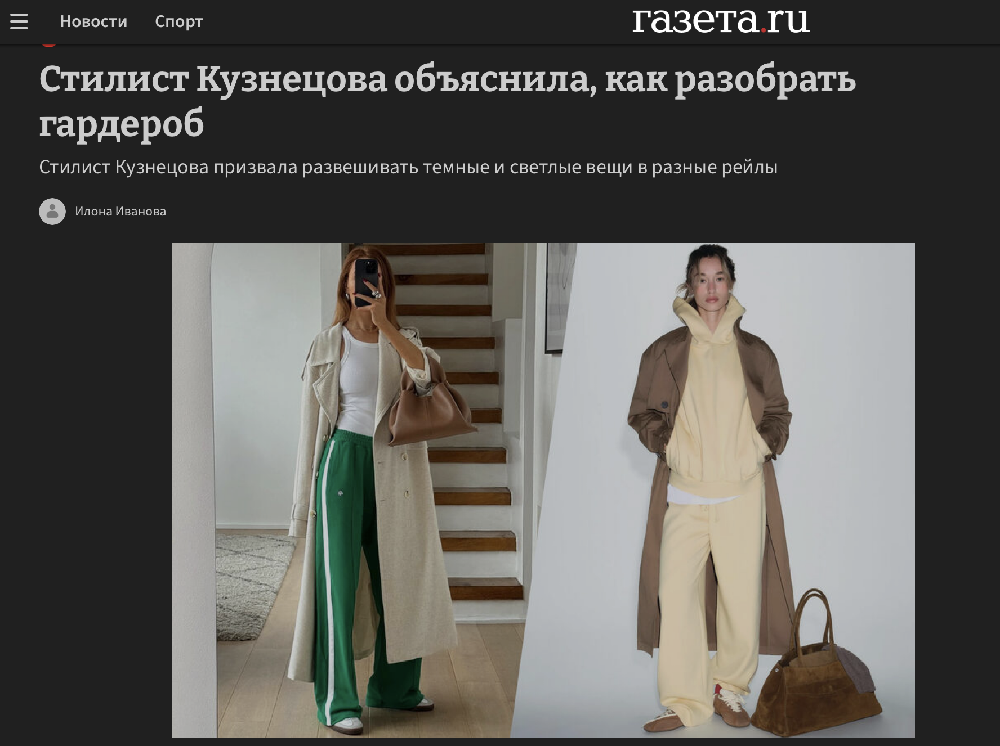
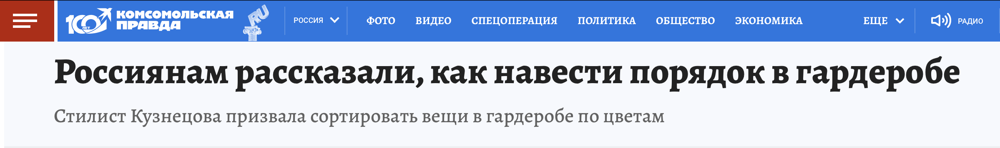
Работа с медиа, позиционированием, экспертностью и присутствием в информационном поле — для людей, которые серьёзно относятся к своему имени и своей профессии.
Связаться